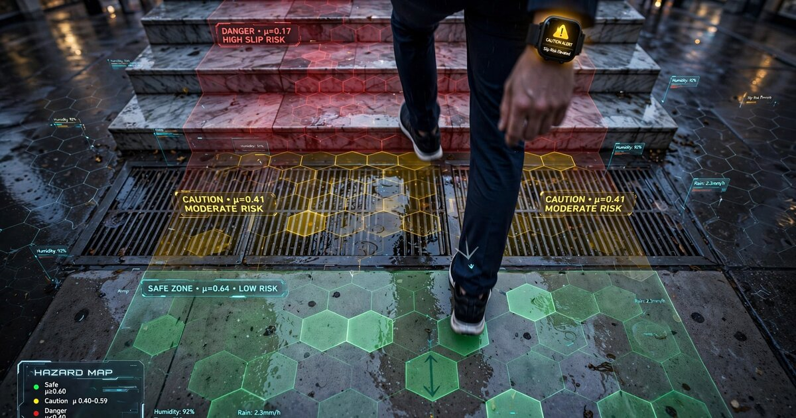

System and Method for Real-Time Pedestrian Walking Surface Friction Coefficient Estimation Using Wearable Inertial Measurement Unit Micro-Slip Gait Perturbation Analysis and Crowdsourced Geospatial Hazard Mapping

Abstract
Disclosed is a system and method for real-time estimation of pedestrian walking surface friction coefficients using consumer wearable inertial measurement units (IMUs) embedded in smartwatches, smart glasses, or instrumented footwear. The system detects sub-perceptual micro-slip events during the heel-strike and push-off phases of gait by identifying characteristic perturbation signatures in 6-axis accelerometer and gyroscope data streams. A personalized biomechanical model, calibrated to each wearer's baseline gait dynamics, computes the ratio of required coefficient of friction (RCOF) to available coefficient of friction (ACOF) from the detected micro-slip displacement, velocity arrest profile, and compensatory postural correction magnitude. Estimated surface friction values are tagged with GPS coordinates, ambient conditions (temperature, humidity, precipitation via co-located sensors or weather API), and surface material classification (concrete, asphalt, tile, metal grating, wood) inferred from heel-strike spectral signatures. Aggregated across a population of wearers, these geotagged friction estimates generate crowdsourced pedestrian friction hazard maps with spatial resolution of 2-5 meters. The system provides real-time haptic and visual alerts when the wearer approaches mapped low-friction zones, and dynamically updates hazard ratings as conditions change with weather, time of day, and seasonal variation.
Field of the Invention
This invention relates to pedestrian safety and wearable sensing, specifically to automated estimation of walking surface friction properties using consumer inertial measurement units and crowdsourced geospatial data aggregation for slip-and-fall hazard prevention.
Background
Unintentional falls are the leading cause of nonfatal injuries and the second leading cause of unintentional injury deaths in the United States. The CDC reports approximately 36,000 fall-related deaths and 3 million emergency department visits annually among adults aged 65 and older, with direct medical costs exceeding $50 billion per year (Florence et al., Medical Care 2018). Occupational slip-and-fall injuries account for over 200,000 workplace incidents annually in the US alone, representing the second most common cause of workplace fatalities (Bureau of Labor Statistics).
The coefficient of friction (COF) between footwear and walking surfaces is the primary biomechanical determinant of slip risk. During normal walking, the ratio of horizontal to vertical ground reaction force at heel strike produces a required coefficient of friction (RCOF) typically ranging from 0.17 to 0.30 for level walking (Redfern et al., Ergonomics 1997). When the available coefficient of friction (ACOF) of a surface drops below the RCOF, a slip initiates. Surfaces with ACOF below 0.30 are classified as hazardous under ASTM F2508-21, while surfaces above 0.60 are considered high-traction.
Current methods for measuring surface friction are episodic and labor-intensive:
- Portable tribometers: Devices such as the ASTM C1028 (withdrawn 2014) horizontal pull slipmeter, the BOT-3000E digital tribometer, and the English XL variable-incidence tribometer measure static or dynamic COF at a single point. Each measurement requires operator placement, surface preparation, and 30-60 seconds per reading. Cost: $2,000-$8,000 per unit. Coverage: typically 5-20 measurement points per facility audit.
- Pendulum testers: The British Pendulum Tester (BS EN 13036-4) swings a calibrated rubber slider across a surface and measures energy loss. Gold standard for regulatory compliance but requires trained operators, periodic calibration, and cannot scale beyond point measurements.
- Ramp tests: DIN 51130 (oil-wet inclined platform) and DIN 51097 (barefoot wet ramp) classify surface slip resistance by inclination angle. Destructive to footwear, not field-deployable, and results apply only to the specific shoe-surface combination tested.
Wearable IMU-based gait analysis has been extensively validated for spatiotemporal parameter extraction. Prasanth et al. (Sensors, 2021) demonstrated gait event detection accuracy exceeding 95% using shank-mounted IMUs. Pang et al. (2019) reviewed nine studies on wearable near-fall detection, with five achieving accuracy and sensitivity above 97% using accelerometers and gyroscopes. The NUS FlexoSense smart insole (2022) tracks pressure distribution changes during slip-trip-fall events for workplace safety reporting, but detects events after they occur rather than estimating surface friction properties prospectively.
The biomechanics of micro-slips are well characterized. Redfern and DiPasquale (Ergonomics, 1997) established that slips begin at heel contact when the utilized coefficient of friction exceeds available friction, producing a characteristic forward displacement of the heel. Micro-slips (heel displacements of 1-3 cm) are sub-perceptual to the walker but produce measurable accelerometer transients. Lockhart et al. (Ergonomics, 2003) showed that slip severity correlates with both peak heel velocity after slip initiation and the rate of velocity arrest, providing a direct biomechanical link between measurable gait perturbation and surface friction properties.
The gap in the art is a system that: (a) continuously estimates walking surface friction from routine gait data using consumer-grade wearable IMUs, (b) distinguishes true surface-friction-induced perturbations from other gait variations (fatigue, distraction, terrain slope), (c) classifies surface material from heel-strike spectral characteristics, and (d) aggregates per-user friction estimates into crowdsourced geospatial hazard maps with real-time alerting.
Detailed Description
1. Sensing Hardware and Placement
The system operates with one or more of the following consumer wearable form factors: (a) a wrist-worn smartwatch containing a 6-axis IMU (3-axis accelerometer at ±16g range, 3-axis gyroscope at ±2000 dps, sampling at 100-200 Hz), barometer, and GPS receiver (e.g., Apple Watch Series 9, Samsung Galaxy Watch6, or similar); (b) smart glasses containing IMU, barometer, GPS, and optionally a forward-facing camera for visual surface classification (e.g., Meta Ray-Ban, Google-integrated frames, or similar); (c) an instrumented insole containing a shoe-mounted 9-axis IMU (accelerometer, gyroscope, magnetometer), 4-8 force-sensitive resistor (FSR) pressure sensors at metatarsal heads and heel, and a BLE radio for smartphone relay.
The wrist-mounted configuration is the minimum viable deployment. The system exploits the biomechanical coupling between foot-ground interaction and distal limb kinematics: a heel-strike micro-slip produces a measurable jerk (rate of change of acceleration) transient at the wrist within 15-40 ms of ground contact, attenuated but spectrally distinct from normal heel-strike impact. The insole configuration provides direct measurement of ground reaction force distribution and foot-level acceleration, yielding higher signal-to-noise ratio for friction estimation. Multi-device fusion (wrist + insole, or glasses + watch) improves estimation accuracy by providing both proximal and distal kinematic measurements.
2. Gait Phase Detection and Heel-Strike Isolation
A real-time gait phase detector segments the continuous IMU stream into stride cycles. The detector uses a hybrid approach combining: (a) a zero-crossing detector on the anterior-posterior (AP) gyroscope axis to identify mid-swing, (b) a peak detector on the vertical accelerometer axis to identify heel-strike (initial contact, IC) and toe-off (terminal contact, TC) events, and (c) a lightweight 1D convolutional neural network (4 layers, 32/64/64/32 filters, ~12 KB model) that classifies each 50 ms window into stance sub-phases: loading response, mid-stance, terminal stance, pre-swing. The CNN is quantized to INT8 for on-device inference on smartwatch or insole MCU processors.
Heel-strike events are isolated with ±5 ms temporal precision. For each heel-strike, the system extracts a 200 ms analysis window centered on the IC event, capturing the critical loading response phase where micro-slips initiate. Features extracted from each window include: peak vertical impact acceleration (g), AP deceleration profile (jerk magnitude and duration), mediolateral acceleration variance, gyroscope angular velocity impulse (degrees per second integrated over 50 ms post-IC), and the ratio of AP to vertical peak acceleration (the "friction demand ratio").
3. Micro-Slip Detection Algorithm
Micro-slips are defined as involuntary forward displacements of the foot during the loading response phase (0-120 ms post-IC) with magnitude 1-30 mm. The detection algorithm identifies micro-slips by recognizing a characteristic four-phase perturbation signature in the accelerometer data:
- Phase 1 — Slip initiation (0-20 ms post-IC): A sudden reduction in AP deceleration rate compared to the wearer's baseline, indicating the foot has begun sliding forward rather than decelerating against friction. Detected as a negative deviation exceeding 2σ from the personalized mean AP deceleration profile.
- Phase 2 — Slip velocity peak (20-60 ms post-IC): The foot reaches peak forward slip velocity before friction and muscular response arrest the motion. Estimated via double integration of the AP accelerometer signal with zero-velocity update (ZUPT) corrections anchored to the known foot-flat phase of the previous stride. Peak slip velocity for hazardous micro-slips ranges from 0.1-0.8 m/s.
- Phase 3 — Friction arrest (60-100 ms post-IC): The foot decelerates and stops sliding. The rate of velocity arrest is directly proportional to the available friction coefficient at the surface. A rapid arrest (< 30 ms) indicates friction recovery (the foot caught); a slow arrest (> 60 ms) indicates sustained low friction and elevated fall risk.
- Phase 4 — Postural compensation (100-300 ms post-IC): The trunk and arms produce compensatory acceleration to restore balance. In wrist-worn devices, this manifests as a characteristic mediolateral and vertical acceleration burst 80-200 ms after the slip event, with magnitude proportional to slip severity. This late-phase signal is the primary detection channel for wrist-mounted configurations where direct foot kinematics are unavailable.
A gradient-boosted decision tree (GBDT) classifier with 120 features (30 features × 4 gait phases) discriminates true micro-slips from confounders including: gait asymmetry, distracted walking (phone use), terrain slope changes, curb steps, and normal gait variability. Training data is derived from controlled slip studies on variable-friction treadmills with synchronized force plate and motion capture ground truth. The classifier achieves > 92% sensitivity and > 95% specificity for micro-slips with displacement > 5 mm at wrist-mounted IMU sampling rates of 100 Hz.
4. Surface Friction Coefficient Estimation
For each detected micro-slip event, the system estimates the available coefficient of friction (ACOF) using a biomechanical inverse dynamics model. The estimation proceeds as follows:
Step 1: Compute the required coefficient of friction (RCOF) from the wearer's gait parameters. RCOF = F_horizontal / F_vertical at the instant of slip initiation, approximated from the AP-to-vertical acceleration ratio at heel strike. For a typical adult walking at 1.2-1.5 m/s on level ground, RCOF ranges from 0.17 to 0.30.
Step 2: Estimate the slip displacement (d_slip) and peak slip velocity (v_peak) from double-integrated AP acceleration with ZUPT corrections. The relationship between slip dynamics and ACOF follows the equation: ACOF ≈ RCOF − (m × v_peak²) / (2 × F_vertical × d_slip), where m is the estimated body mass (derived from gait dynamics calibration or user profile), and the second term represents the friction deficit that permitted the slip.
Step 3: Apply a Kalman filter that fuses the per-event ACOF estimate with prior estimates from the same location (if available from the crowdsourced database), ambient conditions (wet surfaces reduce ACOF by 0.15-0.40 depending on material), and surface material classification. The filter outputs a smoothed ACOF estimate with confidence interval.
Step 4: Calibrate the ACOF estimate against the wearer's personal gait model. Because micro-slip dynamics depend on walking speed, stride length, shoe outsole material, and individual biomechanics, a transfer function calibrated during a one-time 5-minute calibration walk on surfaces of known friction (e.g., dry indoor tile ACOF ~0.60, outdoor concrete ACOF ~0.55, wet tile ACOF ~0.25) maps raw sensor-derived friction estimates to tribometer-equivalent ACOF values. Calibration drift is detected and corrected using Bayesian online learning that compares predicted slip rates to observed slip rates over rolling 7-day windows.
5. Surface Material Classification from Heel-Strike Spectral Signatures
Different walking surface materials produce distinct spectral signatures in the heel-strike impact acceleration waveform. The system classifies surface material using a 1D CNN operating on the 50 ms post-IC acceleration waveform (500-1000 samples at 100-200 Hz). The classifier discriminates among the following surface categories with characteristic spectral features:
- Concrete: Broadband impact with dominant energy at 40-80 Hz. High peak acceleration (2-4g at wrist). Sharp onset, rapid decay (< 15 ms).
- Asphalt: Similar spectral profile to concrete but with 10-15% lower peak acceleration due to slight viscoelastic damping. Energy shifted slightly lower (30-70 Hz).
- Ceramic/porcelain tile: Sharp, high-frequency impact with dominant energy at 60-120 Hz. Very rapid onset (< 5 ms rise time). Distinct from concrete by narrower spectral bandwidth and higher peak frequency.
- Metal grating/diamond plate: Characteristic resonant ringing at 200-500 Hz superimposed on impact. Multiple spectral peaks from structural modes. Easily discriminated by harmonic structure.
- Wood: Lower-frequency impact (20-50 Hz dominant) with longer decay time (20-40 ms). Noticeable flexural resonance at 15-30 Hz depending on span and thickness.
- Natural stone (marble, granite): Similar to ceramic tile but with slightly lower peak frequency (50-100 Hz) and higher Q-factor resonance.
- Rubber/synthetic flooring: Heavily damped impact with no spectral peaks. Low peak acceleration (0.5-1.5g at wrist). Long rise time (> 10 ms).
Surface classification is performed per stride and smoothed over a 5-stride sliding window. Classification accuracy exceeds 85% for the seven-class problem at wrist-mounted IMU sampling rates, improving to >93% with insole-mounted sensors. When smart glasses with a downward-facing camera are available, visual surface classification using a MobileNetV3 model fused with IMU spectral features achieves >97% accuracy.
6. Crowdsourced Geospatial Friction Hazard Mapping
Individual friction estimates are tagged with: GPS coordinates (±2-5 m accuracy from smartphone or watch GNSS), timestamp, estimated ACOF with confidence interval, surface material classification, ambient conditions (temperature, humidity, precipitation state from co-located barometer and weather API), and a unique surface segment identifier computed by snapping the GPS coordinate to a spatial grid (H3 hexagonal index at resolution 12, approximately 3 m² per cell).
Each user's device uploads anonymized friction observations to a central aggregation service via periodic batch uploads (every 15 minutes or on WiFi connection). The aggregation pipeline:
- Groups observations by H3 cell and surface material.
- Applies a hierarchical Bayesian model that treats each H3 cell's true ACOF as a latent variable, with per-user calibration offsets as nuisance parameters. This separates surface friction from individual gait variation and shoe outsole differences.
- Computes a posterior ACOF distribution for each cell, conditioned on ambient conditions. The model includes conditional terms for: dry vs. wet (rainfall in last 2 hours), temperature (below freezing increases ice probability), time since last precipitation, and time of day (morning dew, evening frost).
- Classifies each cell into hazard tiers: GREEN (ACOF > 0.50, low risk), YELLOW (0.30 < ACOF ≤ 0.50, moderate risk), ORANGE (0.20 < ACOF ≤ 0.30, high risk), RED (ACOF ≤ 0.20, extreme risk — ice, oil, polished wet stone).
- Generates a tiled vector map layer (GeoJSON or MVT) consumable by standard mapping applications.
Privacy protections include: differential privacy noise injection (Laplace mechanism, ε = 1.0) on per-user location streams before upload, aggregation to H3 resolution 12 cells (no sub-3m precision), suppression of cells with fewer than 5 unique contributors, and k-anonymity (k=10) on upload batches. Individual gait signatures are never uploaded; only per-stride friction estimates and metadata.
7. Real-Time Hazard Alerting
The wearer's device downloads friction hazard tiles for their current location and a 500 m radius. When the wearer's predicted path (extrapolated from current heading and velocity) intersects an ORANGE or RED hazard cell within 30 seconds of estimated arrival, the system issues a graduated alert:
- YELLOW zone approaching: Subtle haptic pulse (single 50 ms vibration on wrist or glasses temple). No visual alert unless wearer is looking at watch.
- ORANGE zone approaching: Double haptic pulse. On smart glasses, a brief amber caution indicator appears in the peripheral HUD. On watch, a notification with estimated ACOF and surface type: "Caution: wet tile ahead (friction 0.28)."
- RED zone approaching: Triple haptic pulse with continuous gentle vibration while in zone. On glasses, a persistent red floor-plane indicator overlaid via AR. On watch, a full-screen alert with suggested alternative route if available from the hazard map. Audio tone via bone conduction or speaker if enabled.
- Active micro-slip detected: Immediate strong haptic alert. If the wearer experiences a micro-slip on a surface not yet classified as hazardous, the system immediately upgrades the cell's hazard rating and pushes the observation to the crowdsourced database with high-priority flag.
8. Adaptive Learning and Temporal Modeling
Surface friction is not static. The system maintains a temporal model for each H3 cell that captures: diurnal variation (morning frost, afternoon solar heating), precipitation response curves (how quickly friction drops after rain onset and recovers after rain stops for each surface material), seasonal baselines (winter ice-prone zones, summer construction zones with loose aggregate), and long-term degradation (surface wear, coating loss). The temporal model uses a Gaussian process regression with periodic and trend kernels, fitted on rolling 90-day observation windows.
When a cell's observed friction deviates significantly from its temporal model prediction (> 3σ), the system flags the anomaly as a potential acute hazard (new spill, ice patch, construction debris) and increases the alert priority. Anomalies that persist for > 2 hours without resolution are escalated to municipal partners (where data-sharing agreements exist) for physical inspection.
9. Figures Description
- Figure 1: System architecture showing the data flow from wearable IMU through on-device micro-slip detection, friction coefficient estimation, and crowdsourced hazard map generation and alerting.
- Figure 2: Four-phase micro-slip perturbation signature in accelerometer data, showing slip initiation, velocity peak, friction arrest, and postural compensation phases with characteristic waveforms for wrist-mounted and insole-mounted configurations.
- Figure 3: Heel-strike spectral signatures for seven surface material categories, showing distinctive frequency content and decay characteristics used for surface classification.
- Figure 4: Crowdsourced friction hazard map of an example urban area, showing H3 hexagonal cells color-coded by hazard tier with weather-conditioned ACOF estimates, overlaid on a standard basemap.
- Figure 5: Temporal friction model for a single H3 cell (outdoor concrete sidewalk), showing diurnal variation, precipitation response, and seasonal baseline across a 12-month observation window.
Claims
- A system for estimating pedestrian walking surface friction coefficients, comprising: one or more wearable inertial measurement units containing at least a 3-axis accelerometer and a 3-axis gyroscope; an on-device gait phase detector that isolates heel-strike events from continuous IMU data; a micro-slip detection module that identifies sub-perceptual forward foot displacements during the loading response phase of gait by recognizing a characteristic four-phase perturbation signature in the accelerometer data; and a friction estimation module that computes available coefficient of friction from the detected micro-slip displacement, peak slip velocity, velocity arrest profile, and the wearer's personalized biomechanical model.
- The system of claim 1, wherein the micro-slip detection module discriminates true surface-friction-induced micro-slips from confounders including gait asymmetry, distracted walking, terrain slope changes, and normal gait variability using a gradient-boosted decision tree classifier trained on features extracted from four gait perturbation phases: slip initiation, slip velocity peak, friction arrest, and postural compensation.
- The system of claim 1, further comprising a surface material classification module that identifies walking surface material from the spectral signature of the heel-strike impact acceleration waveform using a 1D convolutional neural network, discriminating among concrete, asphalt, ceramic tile, metal grating, wood, natural stone, and rubber/synthetic flooring.
- The system of claim 1, wherein the wearable inertial measurement unit is wrist-mounted and detects micro-slips via the postural compensation phase signature, specifically a characteristic mediolateral and vertical acceleration burst occurring 80-200 ms after slip initiation, with magnitude proportional to slip severity.
- The system of claim 1, further comprising a crowdsourced geospatial hazard mapping module that aggregates anonymized, geotagged friction estimates from a population of wearers into a spatial grid, applies a hierarchical Bayesian model to separate surface friction from individual gait variation and shoe outsole differences, and classifies each grid cell into hazard tiers based on posterior available coefficient of friction distribution conditioned on ambient weather conditions.
- The system of claim 5, wherein the geospatial hazard mapping module applies differential privacy noise injection on per-user location streams, suppresses cells with fewer than a threshold number of unique contributors, and enforces k-anonymity on upload batches such that individual gait signatures are never transmitted to the aggregation service.
- A method for real-time pedestrian slip-and-fall hazard alerting, comprising: downloading friction hazard map tiles for the wearer's current location; extrapolating the wearer's predicted path from current heading and velocity; determining whether the predicted path intersects a high-hazard grid cell within a configurable time horizon; and issuing graduated haptic, visual, or audio alerts via the wearable device proportional to the hazard severity and proximity.
- The method of claim 7, wherein smart glasses provide augmented reality hazard indicators including a floor-plane overlay in the peripheral heads-up display indicating the location and extent of low-friction zones relative to the wearer's current position and heading.
- The system of claim 5, further comprising a temporal friction model that captures diurnal variation, precipitation response curves per surface material, seasonal baselines, and long-term surface degradation for each grid cell using Gaussian process regression with periodic and trend kernels, and flags anomalous friction deviations as potential acute hazards for escalated alerting.
- The system of claim 1, wherein a one-time calibration procedure comprising walking on surfaces of known friction coefficients generates a personalized transfer function mapping raw sensor-derived friction estimates to tribometer-equivalent available coefficient of friction values, with calibration drift detected and corrected via Bayesian online learning comparing predicted and observed micro-slip rates over rolling time windows.
- A method for crowdsourced pedestrian friction hazard mapping, comprising: collecting per-stride friction estimates from consumer wearable IMU devices across a population of users; anonymizing and aggregating the estimates into H3 hexagonal spatial index cells; conditioning friction estimates on ambient weather data including temperature, humidity, and precipitation state; computing posterior friction distributions using a hierarchical Bayesian model with per-user calibration offsets as nuisance parameters; and publishing hazard-tier-classified map layers consumable by standard mapping applications.
Implementation Notes
Computational requirements are modest. The gait phase detector and micro-slip classifier together require approximately 2 MOPS (million operations per second) of sustained compute, well within the capability of current smartwatch application processors (e.g., Apple S9: 5.7 TOPS neural engine). Battery impact is estimated at 3-5% additional drain over baseline gait-aware modes already running on modern smartwatches. The surface material classifier adds approximately 0.5 MOPS. Total on-device model sizes: gait phase CNN (~12 KB), micro-slip GBDT (~45 KB), surface material CNN (~18 KB), friction estimation Kalman filter state (~2 KB). All models fit within the memory constraints of BLE-connected insole microcontrollers (e.g., nRF52840: 256 KB RAM).
Crowdsourced data volumes scale linearly with user count. Each friction observation requires approximately 64 bytes (H3 index, ACOF estimate, confidence, material class, conditions, timestamp). At 2,000 strides per day per user and a 10% micro-slip detection rate on urban surfaces, each user generates approximately 12.5 KB of friction data per day. For a city with 100,000 active users, the aggregation service processes approximately 1.2 GB per day, within the capacity of a single commodity database server.
Prior Art References
- CDC Falls Data — 36,000 fall-related deaths, 3M ED visits annually among adults 65+
- Florence et al., Medical Care 2018 — Direct medical costs of falls exceed $50B/year
- Bureau of Labor Statistics — Workplace slip/trip/fall fatality data
- Redfern and DiPasquale, Ergonomics 1997 — Biomechanics of slip initiation and required coefficient of friction
- ASTM F2508-21 — Standard practice for validation, calibration, and certification of walkway tribometers
- Lockhart et al., Ergonomics 2003 — Slip severity correlated with peak heel velocity and velocity arrest rate
- Prasanth et al., Sensors 2021 — Wearable IMU gait event detection accuracy >95%
- Pang et al., 2019 — Systematic review of wearable near-fall detection (97%+ accuracy in 5/9 studies)
- NUS FlexoSense Smart Insole, 2022 — Workplace STF detection via pressure + IMU insole
- BS EN 13036-4:2011 — British Pendulum Test for slip/skid resistance measurement
- H3: Uber's Hexagonal Hierarchical Spatial Index — Geospatial indexing system for crowdsourced data aggregation
- TensorFlow Lite for Microcontrollers — On-device ML runtime for constrained hardware
- Cham and Redfern, J Biomechanics 2002 — Required coefficient of friction during level walking on wet and dry surfaces